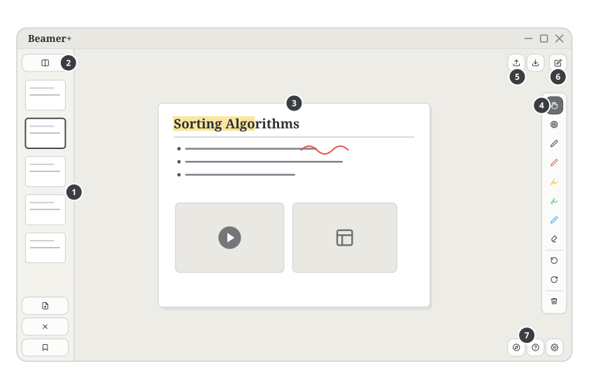
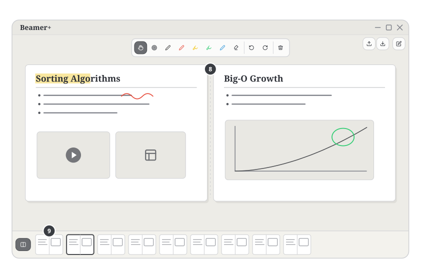
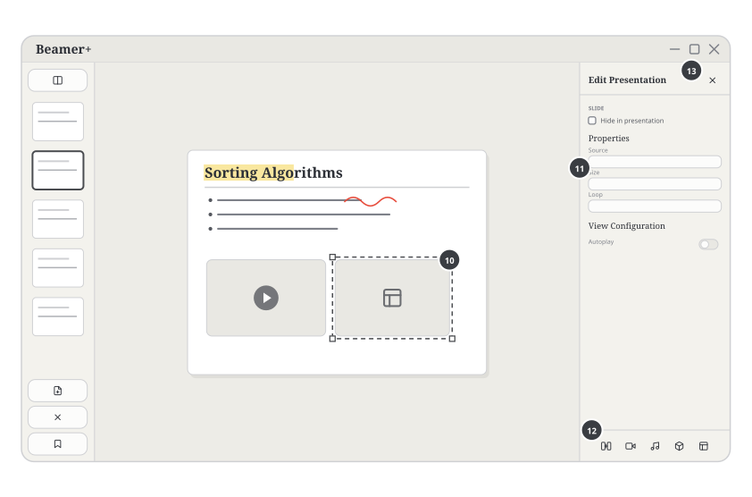
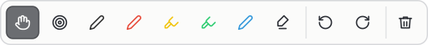
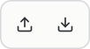
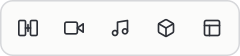
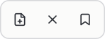

Auto-generated by generate_ui_svgs.py. Each tile links its file path.

overview.svg
overview-split.svg
overview-edit.svgbuttons/split-toggle.svgbuttons/add-blank.svgbuttons/delete-blank.svgbuttons/bookmark.svgbuttons/edit-mode.svgbuttons/upload.svgbuttons/save.svgbuttons/hand.svgbuttons/spotlight.svgbuttons/pen.svgbuttons/highlight.svgbuttons/eraser.svgbuttons/undo.svgbuttons/redo.svgbuttons/clear.svgbuttons/add-view.svgbuttons/add-video.svgbuttons/add-audio.svgbuttons/add-model.svgbuttons/add-widget.svgbuttons/tour.svgbuttons/help.svgbuttons/settings.svgbuttons/pen-1.svgbuttons/pen-2.svgbuttons/pen-3.svgbuttons/pen-4.svgbuttons/pen-5.svgbuttons/hand--selected.svgbuttons/spotlight--selected.svgbuttons/pen--selected.svgbuttons/highlight--selected.svgbuttons/eraser--selected.svgtoolbars/annotation-toolbar.svg
toolbars/annotation-toolbar-horizontal.svgtoolbars/bottom-controls.svg
toolbars/top-right-controls.svg
toolbars/editor-add-row.svg
toolbars/slide-nav-actions.svgThe user can upload a presentation, annotate with a pen or highlighter , and open settings at any time.